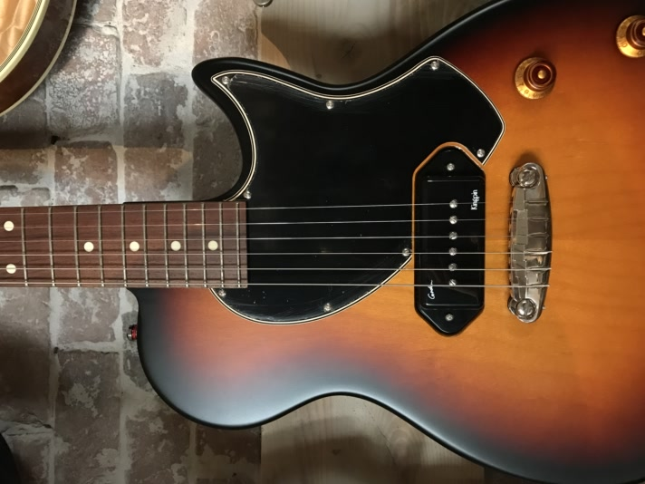
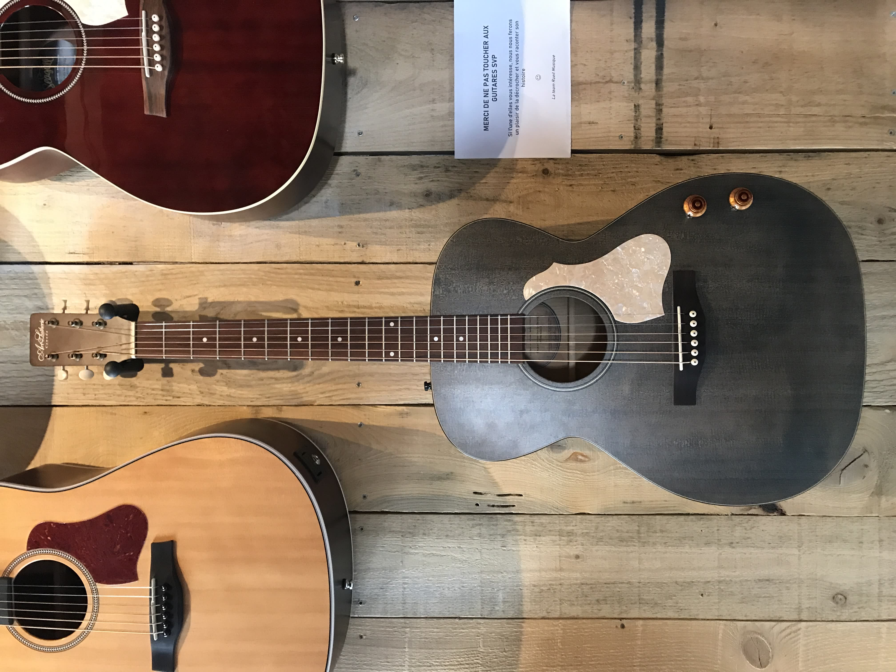

Guitares électriques
Découvrez notre collection de guitares électriques, triées par marque.
Gretsch

G6120-125
Description blablablablba
Godin

5th Avenue CW Kingpin II HB Cognac Burst
Caisse 3/4 jazz pan coupe luthier canadien cognac burst satine. Table voutée dos moule éclisses merisier. Manche érable argenté. Touche palissandre. 2 micros custom humbucker. Volume & tonalité. Sélecteur 3 positions. Cordier & mécaniques chromes. Plaque écaille. **Avec étui tric**
Montreal Premiere LTD Desert Blue TV Jones & Bigsby 042562
**SERIE LIMITEE MADE IN CANADA**. TABLE DOS ECLISSES MERISIER SAUVAGE. MANCHE ACAJOU TOUCHE RICHLITE. 2 MICROS TV JONES. SELECTEUR 3 POS. VOL. TON. ACCASTILLAGE CHROME. ETUI GODIN.
Summit Classic SG Vintage Burst P90
Description blablablablba
Summit Classic SG Vintage Burst Humbucker
Description blablablablba
Summit Classic SG Vintage Burst Double Humbucker
CORPS TILLEUL CANADIEN. MANCHE ERABLE. TOUCHE PALISSANDRE. 2 MICROS HUMBUCKER CUSTOM GODIN. 2 VOL. 2 TON. SELECTEUR 3 POS. ACCASTILLAGE CHROME
Summit Classic SG Black HG
CORPS TILLEUL CANADIEN. MANCHE ERABLE. TOUCHE PALISSANDRE. 2 MICROS HUMBUCKER CUSTOM GODIN. 2 VOL. 2 TON. SELECTEUR 3 POS. ACCASTILLAGE CHROME
Fender
American Professional II Stratocaster (USA) - Mystic Surf Green
Texte à propos des guitares acoustiques, dire à quel point elles sont géniales.
Gibson

Les Paul Custom Shop Quilt Limited Run Iced Tea
desc
Les Paul Custom Shop Qilt Limited Run Natural
Texte à propos des guitares acoustiques, dire à quel point elles sont géniales.
Marceau
Dominante LP Custom - Red Wine Gold
Texte à propos des guitares acoustiques, dire à quel point elles sont géniales.
G61 Style (SG) - Red Wine Gold
Texte à propos des guitares acoustiques, dire à quel point elles sont géniales.
Experience Trad ST
Texte à propos des guitares acoustiques, dire à quel point elles sont géniales.
Duesenberg
Starplayer Special - Red Sparkle
Puissance et élégance. Fabriquée en Allemagne, la Starplayer Special DSP-RDS combine design rétro et performance moderne. Corps en aulne américain massif, table et manche en érable, touche palissandre d’Inde. Équipée d’un duo de micros Duesenberg – GrandVintage et CrunchBucker – pour un son chaud, précis et dynamique. Une guitare fiable, brillante et racée, avec un look Red Sparkle éclatant.
- Corps : Aulne américain massif, table érable
- Manche : Érable massif, touche palissandre
- Micros : GrandVintage (manche), CrunchBucker (chevalet)
- Électronique : 1 volume, 1 tonalité, sélecteur 3 positions
- Mécaniques : Bain d’huile Duesenberg
- Accastillage : Chrome, plaque blanche
- Finition : Red Sparkle – Made in Germany
Jet
JS-300
Texte à propos des guitares acoustiques, dire à quel point elles sont géniales.
JS-350
Texte à propos des guitares acoustiques, dire à quel point elles sont géniales.